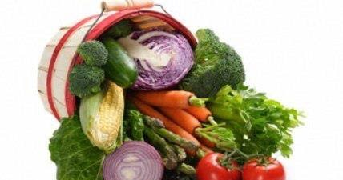
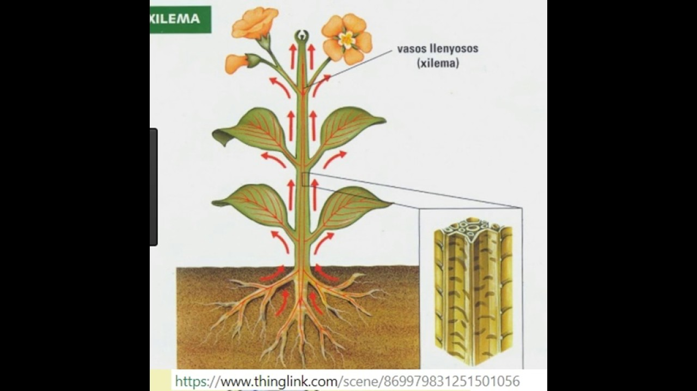

Las frutas y vegetales que pueden ayudar a alargarte la vida - BBC News Mundo
2020.09.14 13:19
Homepage
Accessibility links
Ir al contenido Accessibility Help News Sport Weather Radio Arts Menú Buscar News MundoBBC News Mundo Navegación
Secciones Noticias América Latina ¿Hablas español? Internacional Economía Tecnología Ciencia Salud Cultura Video Deportes Hay Festival Centroamérica Cuenta BBC ExtraLas frutas y vegetales que pueden ayudar a alargarte la vida
Redacción BBC Mundo 23 febrero 2017 Comparte esta actualización en Facebook Comparte esta actualización en Messenger Comparte esta actualización en Twitter Comparte esta actualización en Email Comparte esta actualización en Facebook Comparte esta actualización en WhatsApp Comparte esta actualización en Messenger Comparte esta actualización en Twitter CompartirComparte esta actualización en
Estos son vínculos a páginas externas y abrirán en una nueva ventanaMessenger
Comparte esta actualización en MessengerMessenger
Comparte esta actualización en MessengerMenéame
Comparte esta actualización en MenéameCopiar el vínculo
https://www.bbc.com/mundo/noticias-39067558 Acerca de compartirEstos son vínculos a páginas externas y abrirán en una nueva ventana
Cerrar panel Derechos de autor de la imagen Thinkstock Image caption Aunque todas son buenas, unas aportan más beneficios que otras.Añadirle unas hojitas de espinaca al sándwich, comer una pera a media mañana o incluir unas cucharaditas de guisantes en la cena podría influir para bien en tu longevidad.
Un equipo de investigadores británicos realizó un estudio en el que señalan que algunas frutas y vegetales pueden reducir el riesgo de desarrollar cáncer y cardiopatías.
Además, apuntan que comer 10 porciones de frutas y vegetales al día puede alargarnos la vida.
Los científicos del Imperial College de Londres llegaron a estas conclusiones tras analizar los datos de 95 estudios diferentes, que combinados incluían los hábitos alimentarios de dos millones de personas.
Y estiman que cada año se podrían evitar 7 , 8 millones de muertes prematuras en todo el mundo si la gente comiera a diario esas 10 porciones de frutas y vegetales que recomiendan.
¿Cuales son las frutas y vegetales que te ayudan a vivir más?
Derechos de autor de la imagen Thinkstock Image caption A muchas personas les cuesta comer las cinco porciones al día que recomienda la OMS.Aunque todos son buenos, unos aportan más beneficios que otros.
Para reducir el riesgo de cáncer los investigadores sugieren un menú que incluya:
Vegetales de hoja verde, como espinacas o judías Vegetales amarillos y naranjas, como los pimientos y las zanahorias Vegetales crucíferos, como el brócoli , la coliflor , el repollo , las coles y coles de Bruselas , la berza o col rizadaPara reducir el riesgo de cardiopatías y derrame cerebral, los investigadores recomiendan comer:
Manzanas y peras Frutos cítricos Ensaladas Vegetales de hoja verde, como espinaca, lechuga endivia o achicoria Vegetales crucíferos, como los ya mencionados¿Cuánto "alargan" la vida?
En el estudio los investigadores también calcularon el riesgo de morir prematuramente debido a la dieta .
Comparado con no comer ninguna fruta ni vegetal a diario concluyeron que:
200gr (unas 2,5 porciones) recortan el riesgo de desarrollar enfermedades cardiovasculares en un 13% 800gr ( 10 porciones) recortan el riesgo en un 28% 200gr recortan el riesgo de desarrollar cáncer en un 4% 800gr recortan ese riesgo en un 13% 200gr recortan el riesgo de muerte prematur a en un 15% 800gr lo reducen en un 31%Se estima que una porción de frutas o vegetales para adultos es de 80 gramos , el equivalente a aproximado a una banana pequeña, una pera o tres cucharadas repletas de espinacas o guisantes.
Cuantos más mejor
Derechos de autor de la imagen iStock Image caption Según los investigadores, incluso ingerir pequeñas cantidades de fruta y vegetales tiene un impacto positivo para nuestra salud."Hay evidencias de que las frutas y los vegetales reducen los niveles de colesterol, de presión sanguínea, y potencian la salud de nuestras arterias y de nuest r o sistema inmunológico ", dijo Dagfinn Aune, uno de los investigadores del estudio, que acaba de ser publicado en la revista International Journal of Epidemiology .
"Esto puede ser debido a la compleja red de nutrientes que tienen. Por ejemplo, contienen muchos antioxidantes que pueden reducir los daños en el ADN y así conllevan a una reducción en el riesgo de cáncer ", explicó.
Según el estudio, incluso ingerir pequeñas cantidades de fruta y vegetales tiene un impacto positivo para nuestra salud.
Lo que los investigadores no pudieron dilucidar es si comer más de 10 porciones al día puede tener un efecto aún mayor para nuestra salud.
Pero a muchas personas les cuesta ya comer las cinco porciones al día (400 gramos) de fruta y vegetales que recomienda la Organización Mundial de la Salud (OMS).
En Reino Unido se estima que dos de cada tres adultos apenas consiguen llegar a las tres o cuatro porciones diarias.
Para quienes tienen dificultades para llegar a las 5 al día, Sarah Toule, de la fundación para la investigación del cáncer World Cancer Research Fund recomienda empezar añadiendo a diario una porción extra de frutas o vegetales a la hora del almuerzo.
Otra estrategia, sugiere, es sustituir uno de los snacks no saludables por una fruta.
Temas relacionados
SaludCompartir Acerca de compartir
Email Facebook Messenger Messenger Twitter Menéame LinkedIn WhatsApp- Importancia de los Vegetales
- 253 mejores imágenes de Laminas de Vegetales y Legumbres ...
- Vegetales | Vegetales24
- 'Chips' vegetales: ¿son más sanas que las patatas fritas ...
- Albóndigas vegetales -Mejor Con Salud-
- Vegetales – Incalfer
- Vallejo Frutas y Vegetales
- Frutas y Vegetales en Inglés - Abingles.com
- VEGGIE PACK Panamá – Delivery de Vegetales y Frutas Frescas
- Nombres de Vegetales en Español [Verduras y Vegetales Verdes]
- Importancia de los Vegetales
Vegetables | Vegetales . Spain's finest vegetables can now grace your dinner table. Choose from such popular brands as Viter, Mamia, and more. These vegetables are especially delicious when accompanying your favorite fish, meat or poultry dish. Hida Roasted Piquillo Peppers With Fried Tomato Net.Wt 340 Gr.
- 253 mejores imágenes de Laminas de Vegetales y Legumbres ...
Los vegetales en ambos casos son remolacha, boniato y chirivía; y —según dicen los paquetes— no tienen ni sabores ni colorantes añadidos. Es cierto, al igual que en la anterior, el gusto de ...
- Vegetales | Vegetales24
Los vegetales que hoy consumimos, tanto frutas como verduras en su enorme diversidad, han sido alguna vez domesticadas por diferentes grupos de seres humanos: mientras en Europa siempre fue central el trigo, en América se había desarrollado profundamente el cultivo del maíz.En la actualidad, cada región del planeta posee un detallado calendario de plantación de vegetales que tiene que ver ...
- 'Chips' vegetales: ¿son más sanas que las patatas fritas ...
Hay algunos vegetales que simplemente crecen mejor, más rápido y más abundante en macetas! Por esto hemos decidido juntar los mejores 20 vegetales para cultivar en macetas. Esto no requiere espacio de jardín, así que incluso si vives en un apartamento, un balcón debería ser más que suficiente para cultivar cualquiera de estos! Vegetales Para Cultivar En Macetas #1.
- Albóndigas vegetales -Mejor Con Salud-
B Vegetales. Perejil Por 200gr $ 1.25. Frutas. Quick View. Frutas, Otros Productos. Jugo de Naranja Por 1/2 Galon $ 5.25. Añadir a la lista de deseos. Añadir al carrito. Quick View. Frutas. Papaya Por Unidad $ 1.75. Añadir a la lista de deseos. Añadir al carrito. Quick View. Frutas. Kiwi Por Unidad $ 0.50. Añadir a la lista de deseos ...
- Vegetales – Incalfer
Aunque el pescado es una buena fuente de ácidos grasos omega-3, también se pueden encontrar en muchos vegetales como las coles de Bruselas, col rizada, espinacas y ensalada de verduras de hojas. Alimentos ricos en vitamina E.
- Vallejo Frutas y Vegetales
Frutas y vegetales en el idioma inglés. Como se escriben y como se dicen en ingles
- Frutas y Vegetales en Inglés - Abingles.com
Frutas y verduras que son contables Todo lo que sea contable podemos expresarlo como una determinada cantidad: - O nion (cebolla) - Grape (uva) - Pear (pera) - P each (durazno) - R adish (rábano) - E ggplant (berenjena) - P epper (pimentón) - P ineapple (Piña) - B anana (cambur) - Orange (naranja)
- VEGGIE PACK Panamá – Delivery de Vegetales y Frutas Frescas
Pronunciación en inglés de vegetables. Aprende a pronunciar vegetables en inglés con videos, audio y desgloses silábicos de los Estados Unidos y el Reino Unido.
- Nombres de Vegetales en Español [Verduras y Vegetales Verdes]
Las líneas para procesado de vegetales ofrecen la más moderna tecnología para procesos contínuos, adaptados a las necesidades de producción y posibilidades económicas de los procesadores de vegetales. El diseño modular y la gran variedad de equipos disponibles permiten configurar la línea ideal para cada aplicación.
Vegetables | Vegetales . Spain's finest vegetables can now grace your dinner table. Choose from such popular brands as Viter, Mamia, and more. These vegetables are especially delicious when accompanying your favorite fish, meat or poultry dish. Hida Roasted Piquillo Peppers With Fried Tomato Net.Wt 340 Gr.
Los vegetales en ambos casos son remolacha, boniato y chirivía; y —según dicen los paquetes— no tienen ni sabores ni colorantes añadidos. Es cierto, al igual que en la anterior, el gusto de ...
Los vegetales que hoy consumimos, tanto frutas como verduras en su enorme diversidad, han sido alguna vez domesticadas por diferentes grupos de seres humanos: mientras en Europa siempre fue central el trigo, en América se había desarrollado profundamente el cultivo del maíz.En la actualidad, cada región del planeta posee un detallado calendario de plantación de vegetales que tiene que ver ...
Hay algunos vegetales que simplemente crecen mejor, más rápido y más abundante en macetas! Por esto hemos decidido juntar los mejores 20 vegetales para cultivar en macetas. Esto no requiere espacio de jardín, así que incluso si vives en un apartamento, un balcón debería ser más que suficiente para cultivar cualquiera de estos! Vegetales Para Cultivar En Macetas #1.
B Vegetales. Perejil Por 200gr $ 1.25. Frutas. Quick View. Frutas, Otros Productos. Jugo de Naranja Por 1/2 Galon $ 5.25. Añadir a la lista de deseos. Añadir al carrito. Quick View. Frutas. Papaya Por Unidad $ 1.75. Añadir a la lista de deseos. Añadir al carrito. Quick View. Frutas. Kiwi Por Unidad $ 0.50. Añadir a la lista de deseos ...
Aunque el pescado es una buena fuente de ácidos grasos omega-3, también se pueden encontrar en muchos vegetales como las coles de Bruselas, col rizada, espinacas y ensalada de verduras de hojas. Alimentos ricos en vitamina E.
Frutas y vegetales en el idioma inglés. Como se escriben y como se dicen en ingles
Frutas y verduras que son contables Todo lo que sea contable podemos expresarlo como una determinada cantidad: - O nion (cebolla) - Grape (uva) - Pear (pera) - P each (durazno) - R adish (rábano) - E ggplant (berenjena) - P epper (pimentón) - P ineapple (Piña) - B anana (cambur) - Orange (naranja)
Pronunciación en inglés de vegetables. Aprende a pronunciar vegetables en inglés con videos, audio y desgloses silábicos de los Estados Unidos y el Reino Unido.
Las líneas para procesado de vegetales ofrecen la más moderna tecnología para procesos contínuos, adaptados a las necesidades de producción y posibilidades económicas de los procesadores de vegetales. El diseño modular y la gran variedad de equipos disponibles permiten configurar la línea ideal para cada aplicación.
 